effects/friendly-bullets-ai.png
有效原板AI清理/改编（保留来源，不称直接裁切）
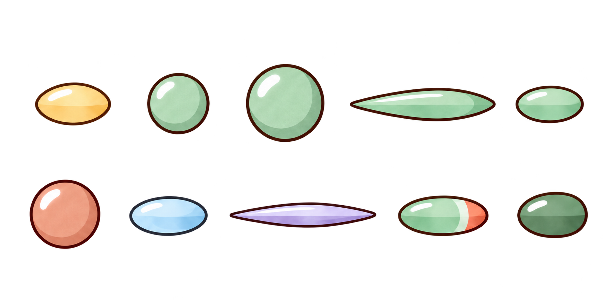
来源校验
6ea57c680aacc4f99429a3702807145585da169dfe74664c68a5994eb9e05005这页补充原画制作中的透明化、动作辅助线清理、独立部件重构和缺口新制，不替代原概念与整体场景画册。AI修复与真实裁切分类保留；运行接入、四向动作、实体与技能语义仍以主审台账为准。
返回完整美术视觉画册 · 来源SHA清单 · 分项验收台账
有效原板AI清理/改编（保留来源，不称直接裁切）

6ea57c680aacc4f99429a3702807145585da169dfe74664c68a5994eb9e05005有效原板AI清理/改编（保留来源，不称直接裁切）
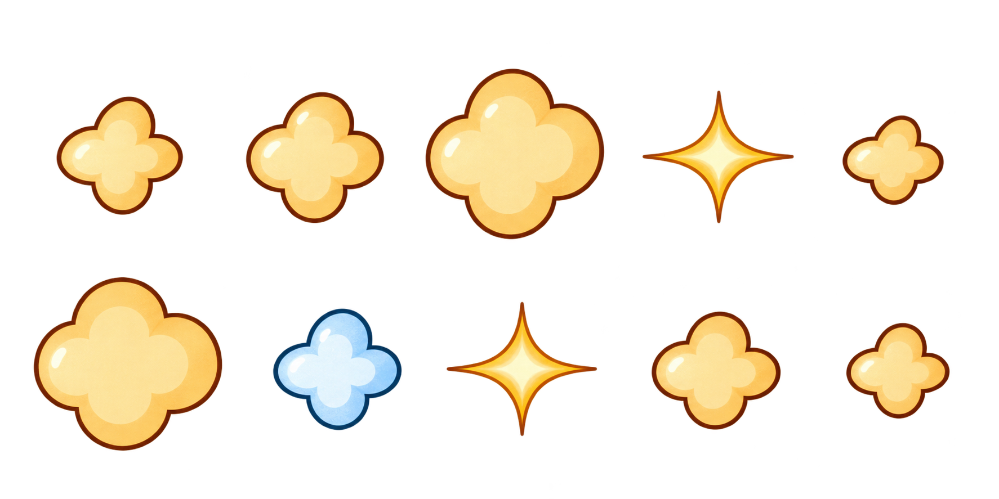
1c194d06434183d693885702244a3cdb2bae11ca7ad948ec54b485153ec518be有效原板AI清理/改编（保留来源，不称直接裁切）
5879f8c7f1e80105241f75573506c2180f2a434779a5271833dd42fb3ea30abf正式新制补充原画（不是旧稿切片）
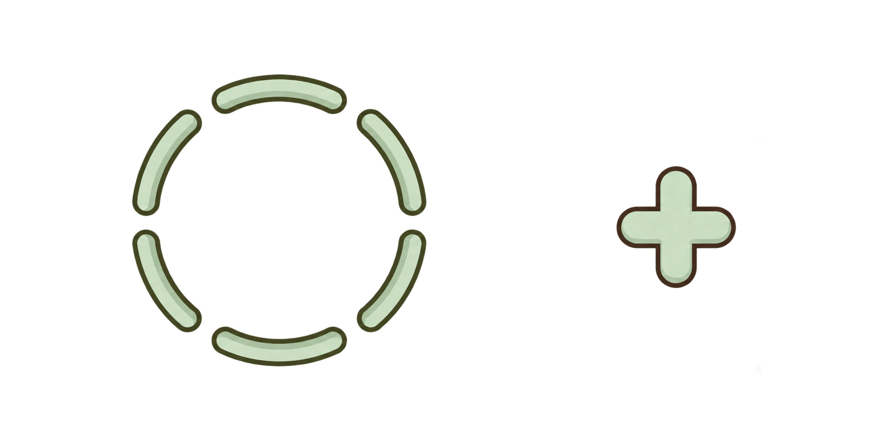
0acbdb750694524d004bbbbabca34698fc27c55c66271dfd1ef345947067bfd6有效原板AI清理/改编（保留来源，不称直接裁切）
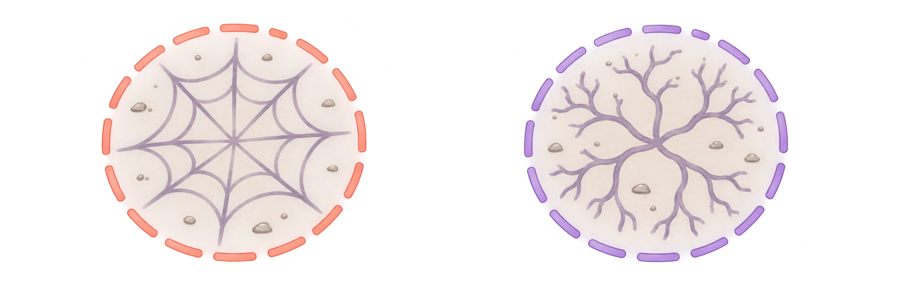
46f46fc472a0175496eef068f6460a5adceca0551dc04e4695987bcb382f82f7原概念整板AI辅助标记清理（不是未修改裁切）
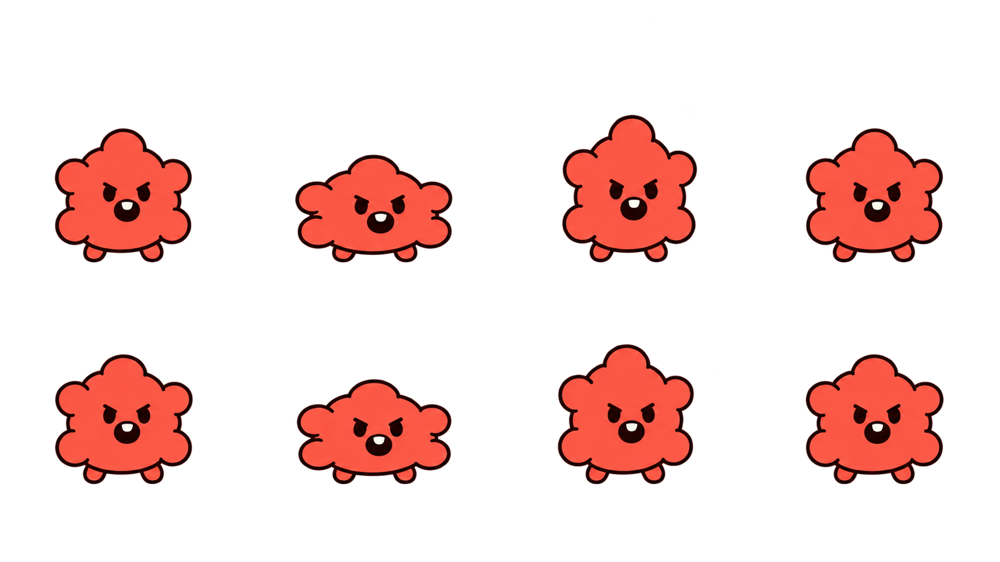
dc345a157991588f337eef42043c5e08b81527783645c1413fea998008583a94原概念整板AI辅助标记清理（不是未修改裁切）
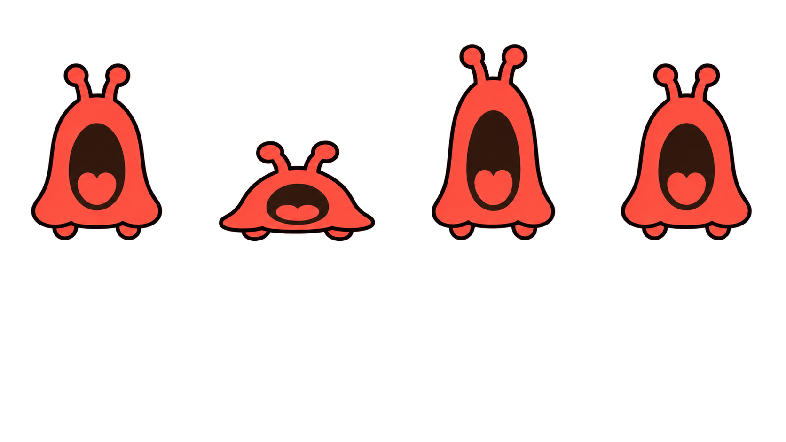
934678ad6486fdbc3e8a08168e25328aa47aa1c2edcb9e92a36d20e800a751c2原概念整板AI辅助标记清理（不是未修改裁切）
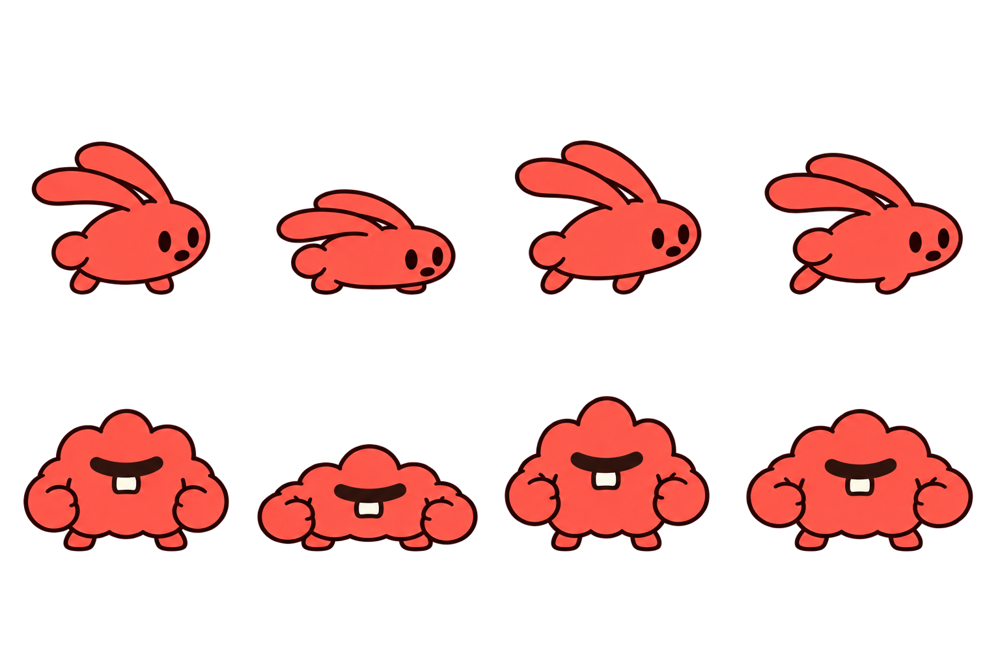
2927dbcca0b7e532421cf5ac8b87a3689b66e5751c01b1ebc5d5715fd4ce6384原概念整板AI辅助标记清理（不是未修改裁切）
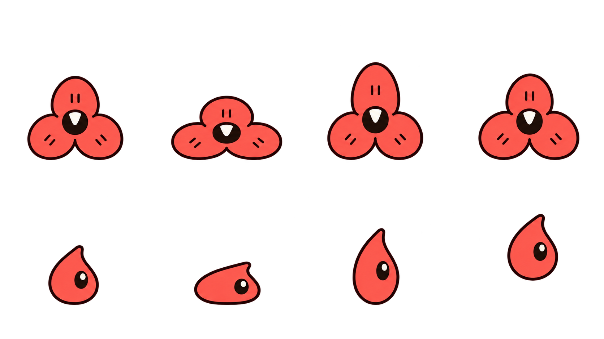
44a51a6f7eaf14ad32268f61e9bb08e0b5d9d885a79c30d605c362c75a729ebd原概念整板AI辅助标记清理（不是未修改裁切）
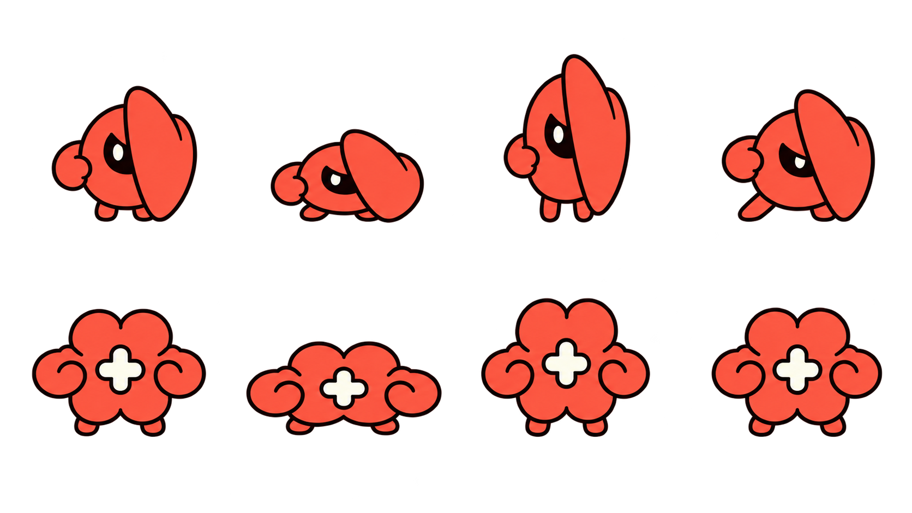
ded3f51f4f38f12b3bac2f5270a29747b81a78f6b9ecbff45d8182093b2ab9a9原概念整板AI辅助标记清理（不是未修改裁切）
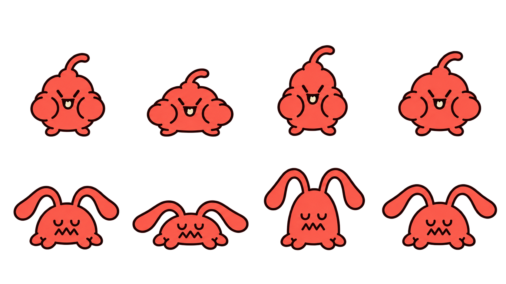
1e52d97aa4fc599238a9c6b6c691008b9ba3f9e9489d0b5e2a20ba995c1b5712原概念整板AI辅助标记清理（不是未修改裁切）
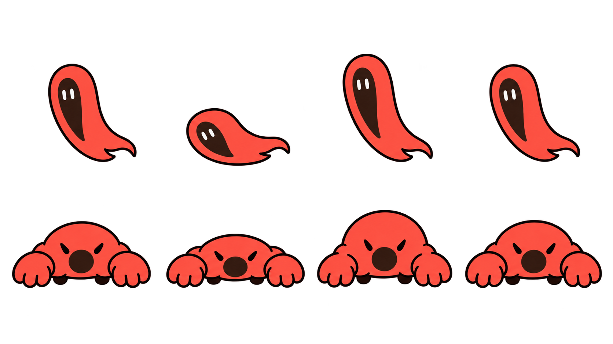
9e3bd00fd76cf05be0f684ae10d3feb27b0c9199cd6b0abb340a1c1551786525原概念整板AI辅助标记清理（不是未修改裁切）
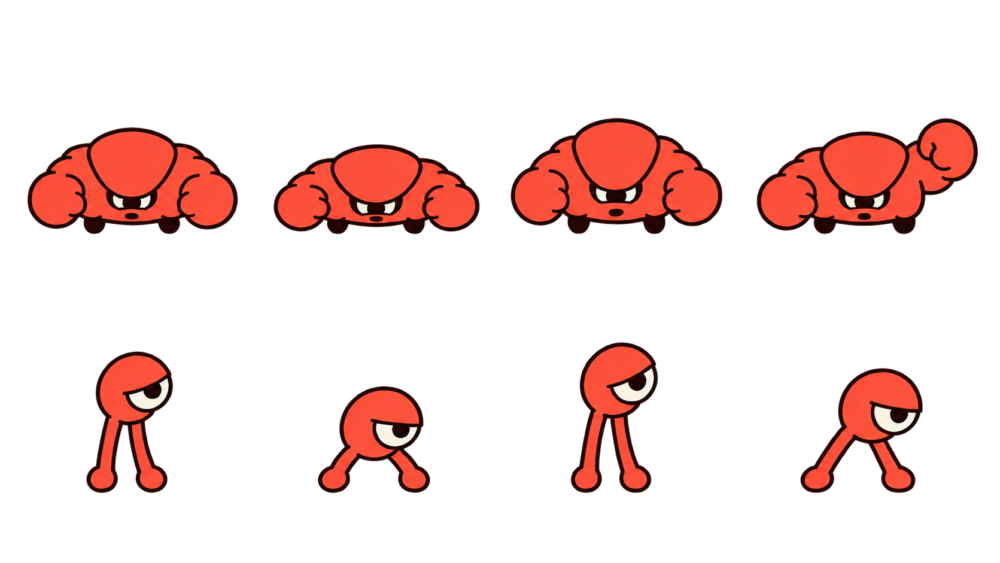
0aae745dca79701c75528df8c14b81bf4012e7872d23d0109be74dd2a67a586c原概念整板AI辅助标记清理（不是未修改裁切）
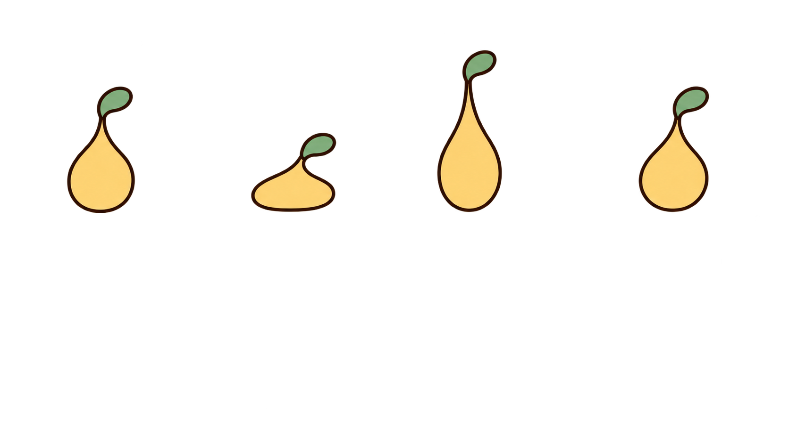
1690edf6a19e850735a46b20445f9e5b50eb8eba81cb055d4f85016bd5416076原造型AI分层重构（不是未修改裁切）
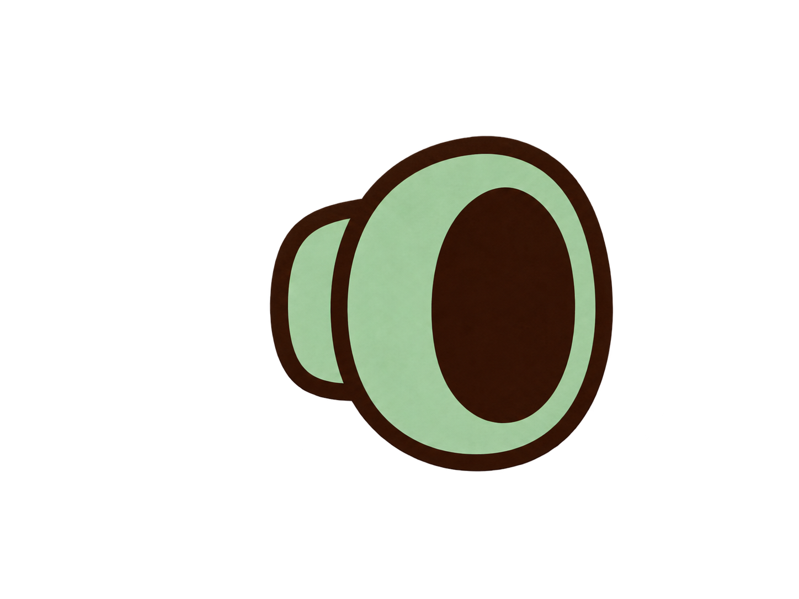
be5fd66b054e58f791af4c4bdef777ecf81aacab75a15a2f6124bbb6cb59d07e原造型AI分层重构（不是未修改裁切）
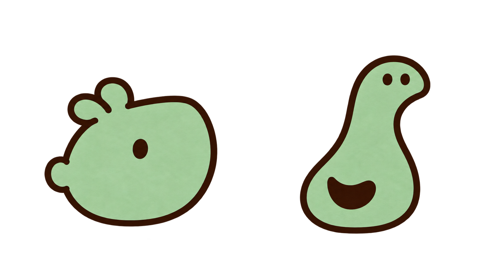
1eded9428c957b99643c7f9dd1bf7dc31e3b3d4c0a43e2749b593cd65ab7ebe8原概念整板AI辅助标记清理（不是未修改裁切）
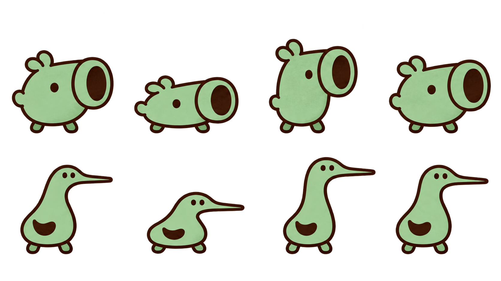
950ff3e4dab05bea49987ad53ae8b7338fb85df8271cb3e1eb0fa581bcc2be45正式新制补充原画（不是旧稿切片）
3a48dbcadadd724cdeb23e449deb33ee46e323d6bb3c1c580ad97540e58cc865